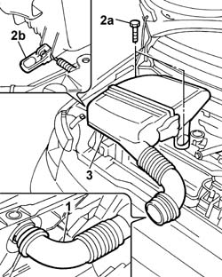
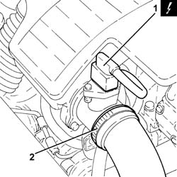
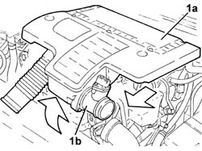
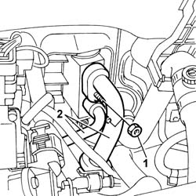
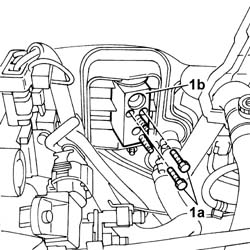

5040B30 expansion valve (tube orifice) - r+r
- Path
- Procedures > 50 AUXILIARY UNITS > 5040 AIR CONDITIONING CASING AND COMPONENTS > 5040B system safety check devices > 5040B30 expansion valve (tube orifice) - r+r
- Kind
- repair procedure (removal / refitting; the operation number is the code)
- Applies to
- all engines; all production periods
- Interactive page
- https://sloeber94.github.io/elrnDB-fPnd/en/#/2752886
Applies to: engines: 1.1, 1.2 8v; all production periods
 Removing
Removing
 Refitting
Refitting1. Release the air hose from the cold air intake.
2. Undo the fixing bolts (2a) and release the fastening clip (2b).
3. Remove the air filter casing complete with hose.

Applies to: engines: 1.3 JTD 16v; all production periods
1. Disconnect the electrical connection from the air flow meter.
 | Name | Connector |
|---|---|---|
1 | Air flow meter | K41 |
2. Loosen the band and disconnect the the turbocharger air inlet sleeve from the rigid pipe, air flow meter side.

Applies to: engines: 1.3 JTD 16v; all production periods
1. Remove the air filter (1a) complete with air flow meter (1b) by releasing from the underlying pins and then from the rear fastenings.

Applies to: engines: 1.3 JTD 16v; all production periods
0010T84 coolant for air conditioning system dehydrate and recharge
1. Unscrew the retaining nuts.
2. Disconnect the air conditioning pipes from the expansion valve.

Applies to: engines: 1.3 JTD 16v; all production periods
1. Undo the fixing bolts (1a) and remove the expansion valve (1b).

Applies to: all engines; all production periods
Refitting
RemovingFit the expansion valve in place and tighten the fixing bolts.
Connect the air conditioning rigid pipes to the expansion valve and tighten the fixing nuts.
0010T84 coolant for air conditioning system dehydrate and recharge
Applies to: engines: 1.3 JTD 16v; all production periods
Fit the air filter complete with air flow meter in place.
Connect the air intake sleeve to the turbocharger, air flow meter side, and tighten the band.
Connect the electrical connection to the air flow meter.
| Name | Connector |
|---|---|---|
- | Air flow meter | K41 |
Applies to: engines: 1.1, 1.2 8v; all production periods
Fit the filter casing complete with cold air intake hose in place and tighten the fixing bolts.